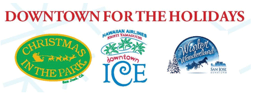

Each year, the two-acre Plaza De Cesar Chavez is transformed into a holiday fantasy with over 40 musical and animated exhibits, glittering lights and the 60-foot Community Giving Tree. Some of the original displays housed in one of the largest exhibits, the Lima Train, include a melting snowman, caroling mice and elf woodcrafters.
We are a 501 (c3) non-profit organization that brings this free community event through sponsorships, donations, grants, and programs. Each summer, we host “Christmas in July”, a fundraiser under the stars and the brightly lit palm trees, where guests dine and dance in support of the event. Throughout the rest of the year, Santa and his elves work long and hard to clean, spruce and fix up the displays, work with companies to develop sponsorships, find grants, and raise the necessary dollars to bring this magical holiday experience to you every year.
More information can be found at What is Christmas in the Park?
[top]
Absolutely nothing! It’s free to visit Christmas in the Park with your friends and families. Our mission is to bring you “A Gift of Joy and Magic”. It is expensive to produce Christmas in the Park every year and we ask you to visit our food court or to make a donation to the program. All of the proceeds go directly toward bringing this event free to you and your family and friends every year.
[top]
Christmas in the Park officially opens for the 2014 season on November 28, 2014 at 5:30pm starting with the Community Giving Tree Lighting Ceremony. From then on, the event is open every day, including Christmas, from 9am to midnight through January 1, 2015. For a complete schedule of all the events going on at the park, click here.
[top]
Christmas in the Park is an annual holiday tradition that takes place in the heart of Downtown San José at the Plaza de Cesar Chavez on Market St. between San Fernando and San Carlos St. For over 30 years, this whimsical event has brought people from all over the Bay Area together during the holidays. Guests enter a winter wonderland of lights, songs and local entertainment while strolling through an enchanted forest of trees decorated by San José schools, community groups and businesses.
[top]
There are plenty of ways to help keep the lights burning for Downtown San José’s oldest holiday tradition! Without donations and help from our supporters, we would not be able to put on this event, so we would like to thank everyone for their support!
To be put on Santa’s Good List, Leave a Donation! For Sponsors, please visit the sponsors page to learn more about the benefits of being a Christmas in the Park sponsor.
[top]
Christmas in the Park brings over 500,000 visitors each year, and if each person were to donate $1, we would be funded for the next year without any problems. Donation boxes are available throughout the park and at the information booth.
Donations can be made, directly on our site by clicking the “Donate Now” button on our homepage.
We offer a variety of sponsor packages for those wishing to be a part of Christmas in the Park. Our sponsor packages are tailored to fit each sponsors’ needs, as well as provide them with a follow-up report at the end of the holiday season. If you would like to learn more about sponsorship opportunities from pricing to what we can offer, please email info@christmasinthepark.com with the subject title “Sponsorship Inquiry.”
There are several ways to support the park while it is open. Drop some change into any of the donation boxes throughout the park, purchase merchandise from Santa’s Toy Shack. Learn how to sponsor one of our displays by looking at our comprehensive sponsor packages. Whether you’re able to donate $5, $100 or $1,000, we have something for you!
While the event is free, it costs several hundred thousand dollars to clean, maintain, and repair the displays, pay for security, city and county permits, set up, take down, daily site cleaning, and the required insurance to continue bringing the traditions and memories to you and your families each year.
[top]
Of course there are! Christmas in the Park is located in the heart of downtown and is surrounded by multiple restaurants all within walking distance. You can also stop by the information booth at Christmas in the Park or check out our Dining page to learn more about restaurants in San Jose.
[top]
Plenty of hotels border Christmas in the Park, but Santa’s home away from home is the The Fairmont San Jose.
For other lodging options and hotel offers, click the link below to see what else Downtown San Jose has to offer!
[top]
Daily entertainment kicks off on opening night. Check out our schedule of events! We have everything from live music and performances to special event days.
[top]
The Christmas in the Park Coca-Cola Food Court is located at the south end of the park near San Carlos St. where you will find an array of foods and tasty treats. Located in the north end of the park is “Santa’s Snack Shack” presented by the Downtown Kiwanis organization. There are both food and drinks located in each of the areas. Check our our vendor list to see what yummy eats and treats are available at the Park!
[top]
Send a letter of inquiry to info@christmasinthepark.com
[top]
To be a part of the live entertainment, all acts must submit an application and go through a screening process with program directors. We welcome all kinds of acts, from singing, and dancing, to other unusual and fun talents.Sounds of the Season
[top]
Yes, there is. There is an ATM located at both the north and south ends of the park. Remember, there is a fee for using the ATM.
[top]
Find Santa at Santa’s Photo Booth in the Park. Check out Santa’s Booth Hours to discuss your placement on Santa’s Good List.
[top]
We encourage you to bring your own camera and snap away! Anyone may visit Santa free of charge, but donations are appreciated. Remember! Just $1 from every visitor would help keep Christmas in the Park’s lights burning each year with no trouble! Donate $5 and receive a special gift!
We will also have disposable cameras available for purchase at our information booth.
[top]
It takes thousands of volunteer hours to make Christmas in the Park a reality. We offer a variety of volunteer opportunities ranging from a few hours a day to several weeks. Christmas in the Park is a popular choice for people in need of community service hours and students wanting to get more involved in the community.
More information can be found here.
[top]
All volunteers under the age of 18 must have a Minor Consent form signed by a parent or guardian to participate in the student volunteer program. An adult supervisor is needed to accompany all students under the age of 16. All volunteers, regardless of age, must sign a volunteer service form before the start of the event. Before you arrive at your volunteer appointment, please print out all waiver forms and bring them to the event, signed if you are a minor.
[top]
Applications for the tree program can be done from the tree program page. Entertainment signups are available online. Stage spots are on a first come first serve basis, so sign up early! Volunteers can also sign up online so please check the volunteer page for more information.
[top]
Follow us on Facebook for up to date information and special announcements.
If you have anymore questions that require more communication and in depth knowledge, please email us at info@christmasinthepark.com
[top]
For those of you who don’t know, the ice rink and carnival rides are not produced and managed by Christmas in the Park. Downtown Ice is a program of the San Jose Downtown Association. The carnival rides that stretch along Paseo de San Antonio known as Winter Wonderland, is managed by Giant Creative, a private business. Together, all three of us make up Downtown for the Holidays. We help bring business, entertainment, and fun to Downtown San Jose each year.

[top]